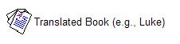
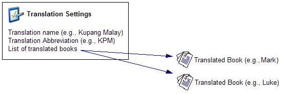
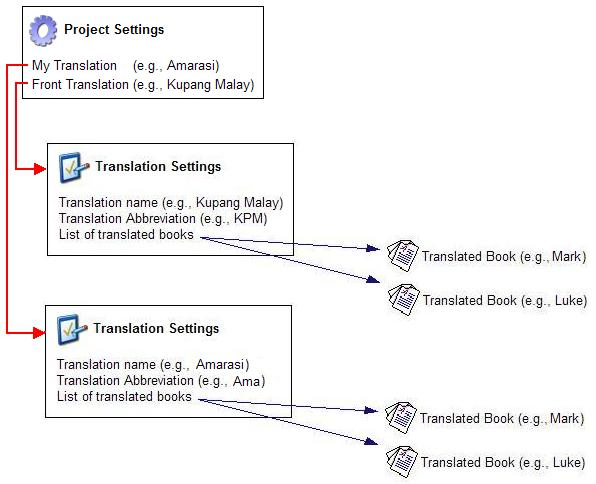
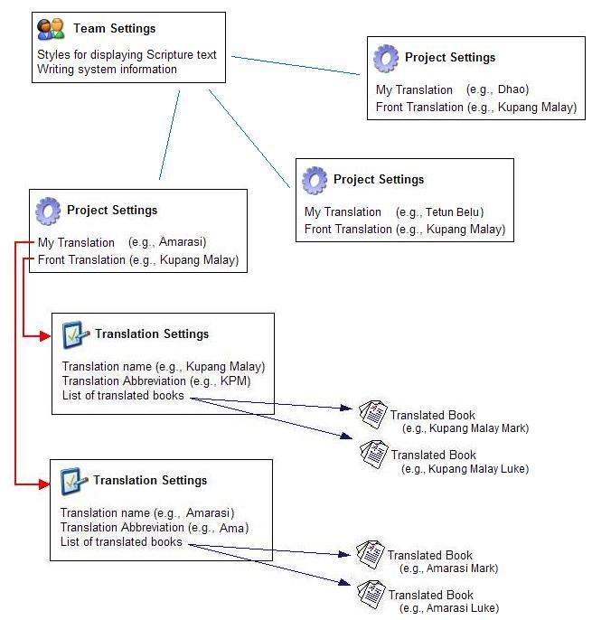

OurWord Help
Settings
Management
OurWord maintains settings in several different places. The goal is to facilitate work with multiple translation projects by making it possible for some settings to be available to all projects; and yet having other settings be customizable for an individual translation. Data and settings are maintained in the following locations:
Translated Books
Translation Properties
Project Properties
Team Settings
Computer (registry) Settings
Translated Books |
Each translated book of the Bible is stored in its own file. Thus Mark will be in one file, Luke in another. OurWord maintains these files in Toolbox Standard Format for Scripture.

Translation Properties |
OurWord maintains a settings file in which it keeps track of all of the books in a translation.

Information in this Translation Settings File includes
The Translation Settings are edited through the Configuration Dialog. The settings about each book in the translation are edited through the Book Properties Dialog (which is accessed from the Configuration Dialog.)
Project Properties |
An OurWord Project pulls together several translations. It tells the software which translation to treat as the Front, which to treat as the "target", and permits additional translations to be specified as sibling translations or reference translations.

The Project settings are edited through the Configuration command of the Tools dropdown.
By separating the Translation settings into different files, rather than lumping them in with the project files, it is possible to use the same translation settings for multiple projects. Thus one project might set up Translation A as a front and B as a target; a second project may use Translation A as a front and C as a target. The settings for Translation A are only entered once, and are afterwards available for all projects that need it.
Team Settings |
OurWord stores a number of settings in a TeamSettings file, making these available for multiple projects and translations.

Team Settings include such things as:
Computer (registry) Settings |
Finally, there are a number of settings which are stored in the computer. These are settings that are unique to the individual user, and include:
Most of these settings are edited through the Configuration dialog.
Settings File Names and internal format |
Updated as of Version 1.0.